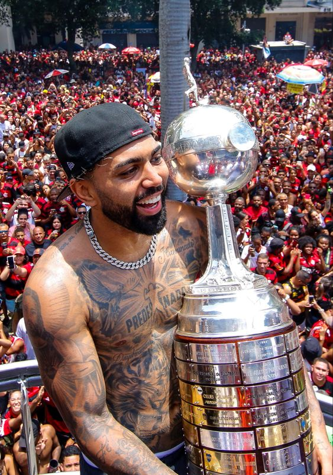
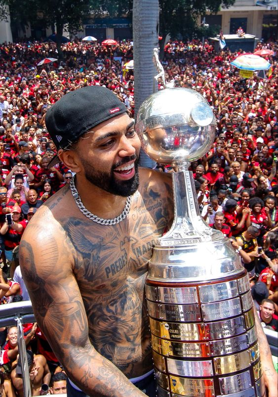
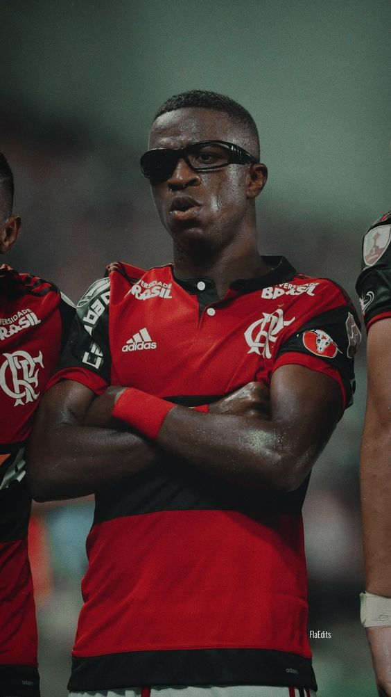

Esta fotografia flagrou um interessante momento de amizade entre as duas maiores lendas do futebol brasileiro. Registrou um jogo histórico contra o Atlético/MG, no Maracanã, no dia 6 de abril de 1979, cuja renda foi revertida para as vítimas das enchentes ocorridas em Minas Gerais naquele ano. O Flamengo venceu por 5 a 1 com um público de 139.953 pessoas. Pelé estava prestes a se aposentar e Zico estava no auge da sua carreira.
 

Herói de mais uma final de Libertadores pelo Flamengo, o centroavante Gabigol fez história na decisão de Guayaquil no último sábado (29). Autor do gol do título, assim como em 2019, Gabriel Barbosa mostrou mais uma vez sua estrela na competição. Com 31 gols, Gabigol é o brasileiro com mais tentos anotados na competição.
"